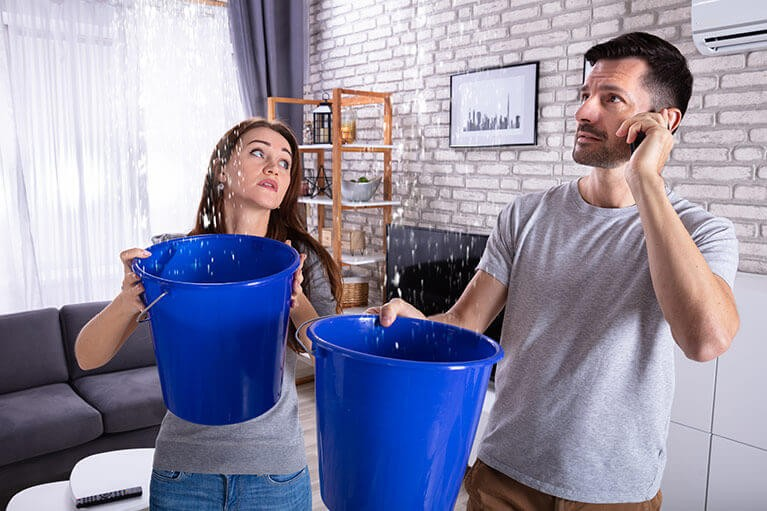
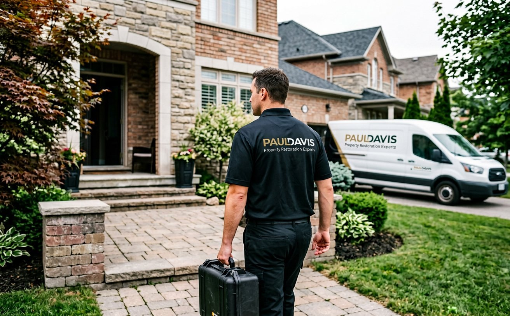
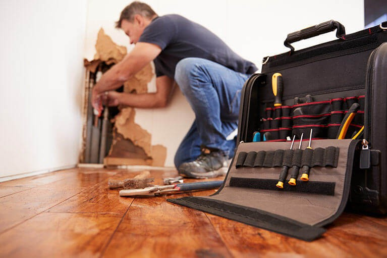
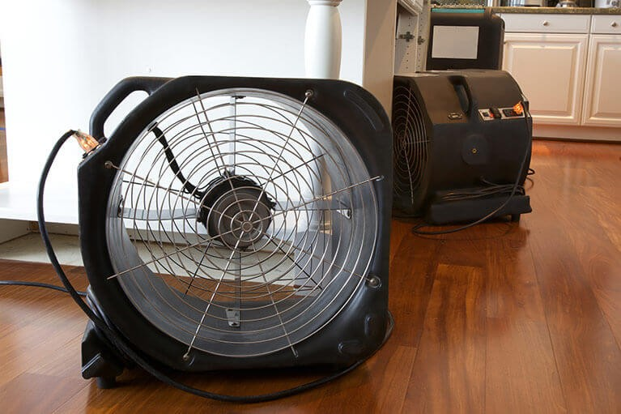
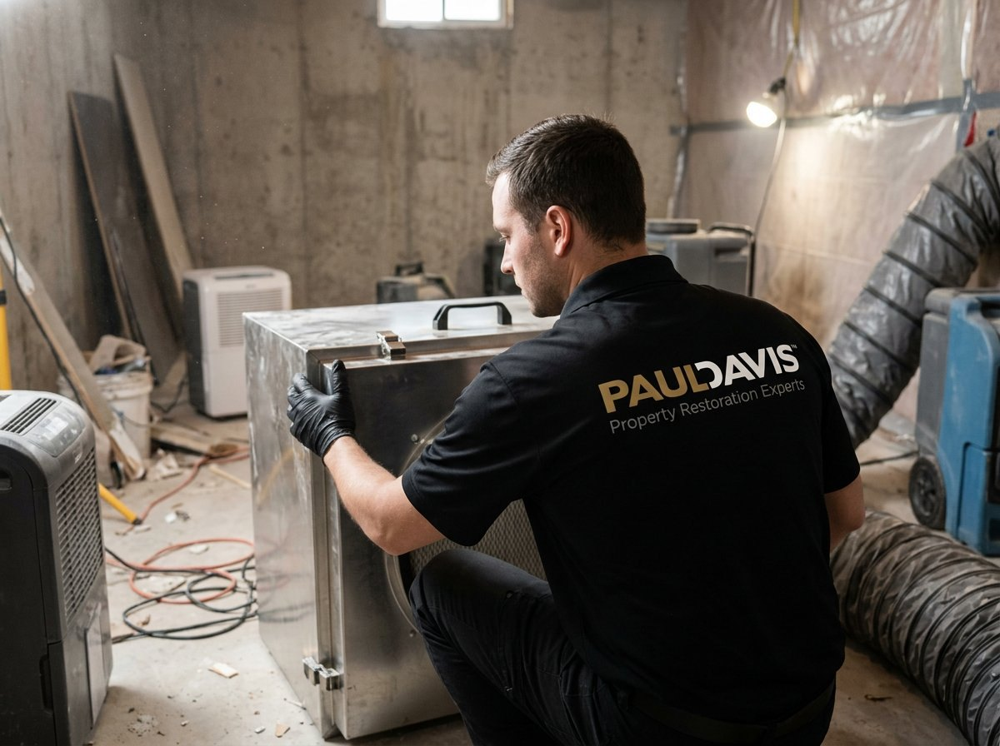
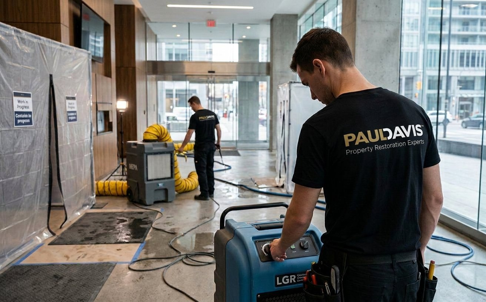
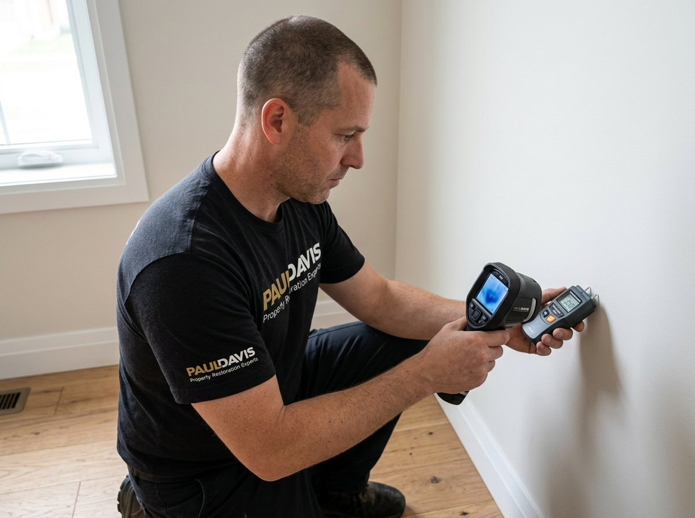

Active Leak Triage
24/7 live dispatch responds within 30 minutes with immediate containment guidance.
Emergency property damage compounds with every passing hour. Paul Davis responds within 30 minutes of your call and arrives on site within 4 hours to start water extraction, structural drying, and full insurance-backed restoration—24 hours a day, 365 days a year.

No homeowner or facility manager wants to face the stress of sudden flooding. Water rapidly penetrates hardwood, saturates subfloors, and wicks upward into drywall. Our York Region specialists deploy industrial extraction and scientific drying within 4 hours to stop secondary damage at its source.

24/7 live dispatch responds within 30 minutes with immediate containment guidance.

Precision inspection and controlled removal of compromised cavities and wet materials.

Calibrated air movers and dehumidifiers restore floors and framing to dry standards.
From basement floods and kitchen fires to complex multi-unit commercial losses, Paul Davis provides certified cleanup, contents recovery, mold remediation, and full reconstruction.
Rapid truck-mounted and submersible extraction within 4 hours of your call. We remediate basement floods, burst or frozen plumbing, sump pump failures, roof leaks, and Category 3 sewage backups—preventing structural warping and secondary microbial growth.
Damage from kitchen fires, electrical incidents, and acidic soot requires specialized chemical and thermal remediation. We secure the property, scrub airborne particulates, neutralize smoke odour, and rebuild damaged rooms so your house feels like home again.

Negative-air containment, commercial HEPA filtration, safe removal of colonized drywall/insulation, and moisture-source correction to protect indoor air quality for families and employees.
Disasters affect cherished belongings, garments, draperies, and furnishings—not just walls and floors. We carefully inventory, clean, sanitize, and restore salvageable household goods and textiles alongside your property insurance claim.
When disaster strikes your business, every hour spent on recovery can equal thousands of dollars in lost revenue. Our commercial and large-loss specialists mobilize rapidly to contain damage, dry multi-zone facilities, and manage turnkey reconstruction to get your operations running again.


Mopping surface water leaves hidden moisture trapped beneath flooring and wicked up inside drywall cavities. Only calibrated moisture meters and infrared thermal cameras—operated by trained water restoration specialists—can locate and verify complete structural drying.
Paul Davis arrives within 4 hours to extract standing water before deep subfloor saturation sets in.
Untreated moisture climbs drywall, swells baseboards, and penetrates subflooring unseen by the naked eye.
Delayed remediation triggers mold colonization, hardwood cupping, and significantly higher repair costs.
A disciplined, transparent 4-stage protocol engineered to protect your property, document every detail for your insurer, and eliminate guesswork.
Call (647) 494-8481 any hour of the day or night. We respond within 30 minutes to assess safety hazards and dispatch your local York Region crew.
IICRC-certified technicians arrive on site within 4 hours to stop water spread, extract standing floodwater, and map moisture with infrared cameras.
High-velocity air movers, commercial dehumidifiers, HEPA air scrubbers, and antimicrobial treatments bring all materials back to verified dry standards.
We work hand-in-hand with your property insurance company, supplying complete moisture logs and managing reconstruction until your space is fully restored.
Strategically positioned to reach residential neighbourhoods, commercial plazas, and high-rise properties across York Region and the Greater Toronto Area within our 4-hour emergency window.
Navigating a property loss claim during an emergency shouldn’t fall solely on your shoulders. Paul Davis franchises follow strict industry documentation standards trusted by Canadian property insurance carriers.
Have an immediate question about an active leak, basement flood, or insurance claim? Call our 24-hour York Region line directly.
Speak With Dispatch · (647) 494-8481We operate 24 hours a day, 7 days a week. We guarantee a response callback within 30 minutes of your inquiry and arrive on site within 4 hours to begin emergency water extraction and mitigation.
Water quickly soaks beneath flooring into the subfloor and wicks upward inside drywall cavities where household fans cannot reach. Our IICRC-certified technicians use calibrated moisture meters and infrared thermal cameras to detect hidden moisture pockets and dry the structure completely—preventing mold and costly future repairs.
Yes. Paul Davis works hand-in-hand with property insurance companies across Canada. We thoroughly document moisture readings, affected areas, and restoration steps to streamline your claim process from initial cleanup through final reconstruction.
We handle leaking and frozen pipes, sump pump failures, sewage backups, roof leaks, sink and appliance overflows, basement floods, kitchen fires, smoke damage, mold remediation, household goods and textiles cleaning, and commercial large-loss reconstruction.
Founded in 1966, Paul Davis is a trusted North American restoration network of more than 370 independently owned and operated franchises across Canada and the United States, staffed by IICRC-certified restoration specialists.
Speak with our 24-hour dispatch line now for a guaranteed 30-minute response and 4-hour on-site arrival across York Region and the GTA.